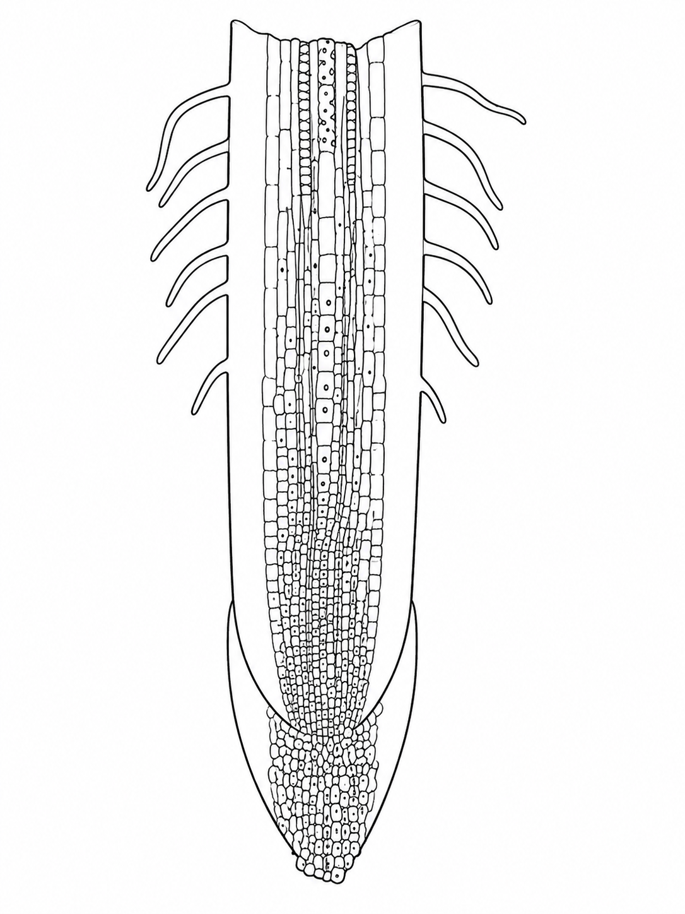
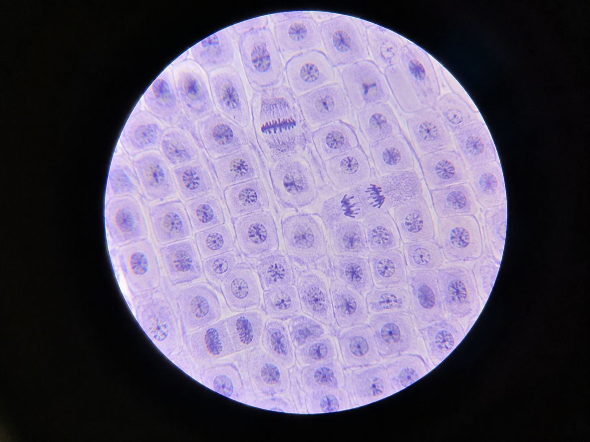
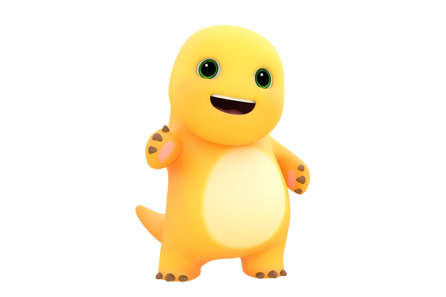

虚拟仿真：观察植物根尖细胞有丝分裂
一、实验步骤
请将下列实验步骤进行排序。
注：可点击两个步骤交换位置，也可使用“前移 / 后移”调整。
① 取材
② 染色
③ 压片
④ 引流
⑤ 镜检
第一步：取材
在根尖图中拖动鼠标（或手指）框出适合观察有丝分裂的取材区域。

观察细胞的形态和排列特点，再决定在哪里取材。
你的取材
1 取材2 固定3 解离
框选后点击“提交”。取材正确后，固定、解离作为后续处理流程呈现，不再额外选择试剂。
第二步：染色
依次完成选择染色剂和放置盖玻片。
① 选择染色剂
② 放置盖玻片
请先完成染色剂选择
第三步：压片
先选择压片方式，再调节力度，观察细胞分散程度的变化。
① 压片方式
② 压片力度
当前力度：50第四步：引流
完成引流操作。
操作台
吸水纸
三步完成
① 选择引流液体
② 在盖玻片边缘滴加
③ 放置吸水纸
第五步：镜检
请在视野中分别指出中期细胞和后期细胞。点击你判断正确的细胞即可。
中期：未找到后期：未找到


奶龙来为你庆祝啦！
恭喜完成“观察植物根尖细胞有丝分裂”虚拟仿真：取材 → 染色 → 压片 → 引流 → 镜检。
虚拟仿真和实验课上动手操作，你更喜欢哪一种方式，为什么？